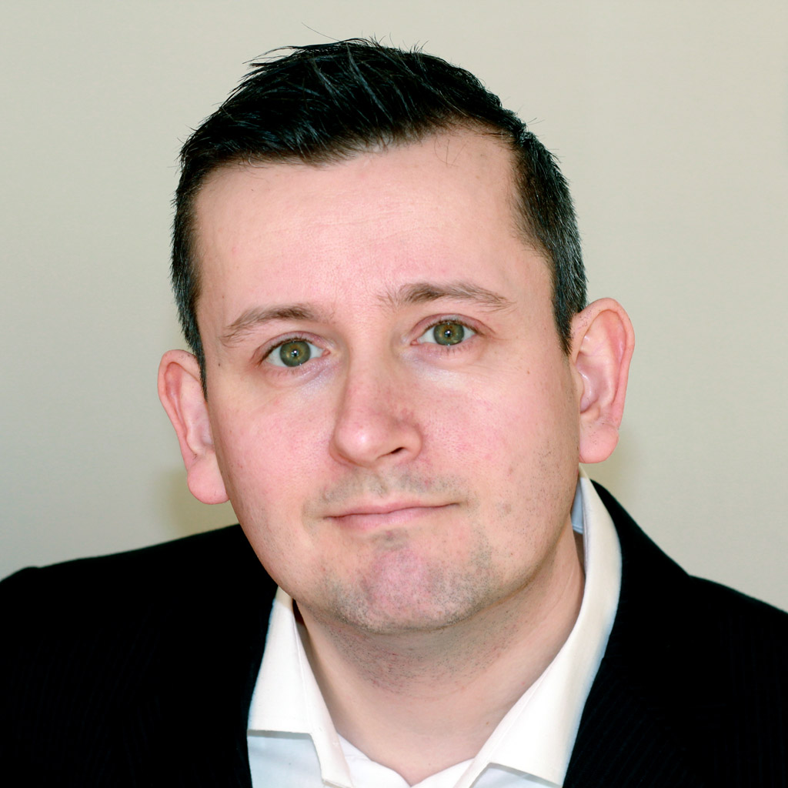

About Alex
Alex is a very versatile individual with experience in a lot of areas. Generally he needs to
have the big picture in mind even as he goes deep and work at the low level of bits and bytes,
algorithms and protocols. For him the technical details are important and necessary to achieve
many interesting goals but at the end of the day, the real indicator of success is whether it
improved the lives of the people involved. Improving the lives of people by delivering value
to your costumers is what all great businesses do, so this has been driving his focus of
combining technology with business.
Technically he prefers to use the right tool for the job but repeatedly reach for these technologies
when working on projects: Python+Tensorflow+Pytorch (Machine Learning / Data Science),
Node.js (web APIs and microservices), HTML+TailwindCSS+React+Redux (frontend work),
C++ (low level work), Microsoft SQL Server / PostgreSQL (db work).
|

|
|
»
|
Frontend Developer
Polytech, Aarhus, March 2021 - September 2021
Worked on frontend as part of the administration website for an IoT project. This included data visualization and close collaboration with the UI/UX designer.
The application was structured as a SPA (Single Page Application) and had many different parts related to administration of the hardware devices and the sensor data (including GPS).
Skills used:
- Angular V11
- Typescript
- NodeJS
- Data Charting
- Amazon AWS
|
Software Architect
GreenLab, Aarhus, June 2020 - October 2020
I helped design the architecture for a large green energy system comprised of marketplace, administration
and simulation. Also developed prototype in NodeJS with a React frontend.
Skills used:
- Software Architecture
- React
- NodeJS
|
Data Scientist
LEGO, Aarhus, September 2019 - June 2020
I developed deep learning based computer vision algorithms such as image classification and object detection. These were
prototyped and developed in Python and then ported to run on a small embedded platform with limited
resources. The limited resources meant that standard models could not fit in the memory requirements and
had to be customized and optimized in C++ for the application.
Skills used:
- Python (Caffe, Keras, TensorFlow)
- C / C++ (TensorFlow lite)
- Embedded development
- Data Analysis
|
Data Scientist
Salling Group, Aarhus, January 2018 - September 2019
I have designed and implemented a modern search engine based on Machine Learning models written in Python. The search engine is designed specifically for recommending products based on text searches.
The search engine is deployed in production and is used through an API to augment the next version of product searching (based on Algolia).
Also developed model to find the most important factors to predict high revenue of an online ecommerce customer.
Also developed a state-of-the-art machine learning language model for Danish.
Also helped find and interview candidates for their new Machine Learning team.
Skills used:
- Python (keras, pytorch, tensorflow)
- NodeJS
- Data Analysis
|
Machine Learning Consultant
MachineReady ApS, Aarhus, May 2016 - Present
Been doing consulting regarding machine learning technologies and implementations.
Also been doing talks to audiences about machine learning.
The company website is done using NodeJS + React + TailwindCSS.
Skills used:
- Python (keras, pytorch, tensorflow)
- NodeJS
- Data Analysis
- React
|
Data Scientist
Dansk Supermarked Group, Aarhus, October 2017 - December 2017
Proof-of-concept work for 2 Machine Learning usecases.
One was looking at heterogeneous data sources to assess which factors were most important in order to predict the profit of an online visitor to wupti.com.
Second was intelligent similarity-measure between user searches and actual products, taking into account user and product similarities.
Skills used:
- Python (keras, tensorflow)
- NodeJS
- Data Analysis
|
Backend Developer
Grundfos, Bjerringbro, January 2017 - September 2017
Part of team responsible for backend part of 2 IoT projects. This was mainly handling the streaming and analysis of data (Stream Analytics, Azure functions) as part of a microservices architecture, but also serving the API for the website frontends.
Also did various tasks for updating the frontend when backend changed. Frontend was developed in React+Typescript (one frontend) and Angular (another frontend).
Skills used:
- C#
- NodeJS
- Windows Azure
- Elastic Search
- Micro Services
- React
- Typescript
|
API Developer
Dansk Supermarked Group, Aarhus, June 2016 - December 2016
Part of the API-team responsible for internal and external APIs used throughout the DSG brands.
The software architecture was microservices with most services in Node.js and some in .NET.
Hosting on Azure cloud with the following database services used: Redis, MSSQL, DocumentDb.
Used Continous Integration and Continuous Deployment with dual test / production environments.
Source control in Bitbucket and Gitlab.
Skills used:
- NodeJS
- Windows Azure
- Micro Services
|
Software Architect
Headfitted ApS, Aarhus, December 2009 - May 2016
Designing software architecture and managing teams of various sizes placed in India. Scrummaster and part of idea generation and innovation regarding new projects. Been to India for meeting the Indian developers twice. Have been working on big projects for clients such as Vestas, Lego and the local municipality. Also worked extensively on Delogue - all the way from early prototype, to scaling production code to accomodate multiple large customers. Have been using these technologies:
- Agile software development in SCRUM teams
- C# ASP.NET web development and desktop
- Databases MySQL, MS-SQL and PostgreSQL
- A/B testing for performance optimizations
- Machine learning for object recognition and natural language analysis
- Native and HTML5 based iOS app development
- HTML5 and Javascript for frontend web development
- NodeJS
- Java native Android app development
- Ruby on Rails
- Git for software version control
|
Software Developer
Vestas Wind Systems A/S, Aarhus, June 2008 - November 2009
Worked at the Control branch of the LAC (Loads, Aerodynamics and Control) department where I was responsible for final delivery and packaging of the control software releases (C++). As part of the work I designed, implemented and maintained a custom programming language specially made for saving manual labour when testing the control software. Some highlights:
- C++ in embedded environment
- Part of the test and deployment team
- Matlab/Simulink design and development
- Implemented interpreter for custom scripting language in C/C++
- Python used for miscellaneous jobs
- Visual Studio
- IBM Rational Clearcase
|
Software Developer
Bang & Olufsen, Aarhus, April 2005 - June 2008
Part of the innovation team at Idealab, working on the prototypes for future products. Worked on multiple projects/prototypes as part of the teams: Software Taskforce, Software Ideation and Software Research and Prototyping. Developed software for the BeoSound5 sound-system. Used these technologies:
- Agile software development in SCRUM teams
- Design and development of applications and backend in C# and C++
- Microsoft DirectX
- Microsoft SQL Server and MySQL
- Visual Studio
- Subversion
|
Software Developer
Siemens Wind Power, Brande, May 2003 - April 2005
Part of the wind power team at KK Electronic, later bought by Bonus Energy A/S and Siemens Wind Power. I was monitoring the wind farms for early signs of issues and responsible for development and maintenance of the wind turbine monitor software called WPS (Wind Power Supervisor) implemented in ASP.NET. Used these technologies:
- Application programming in Visual Basic and C++
- Webdevelopment in ASP.net using C# and javascript
- Microsoft SQL Server
- Visual Studio
|
Freelance Software Developer
Shaman Code, Udbyhøj,
Freelance developer in privately owned Shaman Code. Used these technologies to help customers:
- Application programming in C++
- Online Java applet computer games
- Webdesign HTML, CSS, ASP and PHP
|
Games Developer
Hokus Pokus Games, Aarhus, March 2001 - October 2002
Part of team that developed the 3D tennis game FILA World Tour Tennis for XBox and PC. All programming done in C++. Notable areas of contribution :
- Game development tools
- Design and implementation of a custom real-time physics simulation for tennis ball dynamics
- Hardware accelerated 3D windowing system for GUI
|
|
»
|
Machine Learning Competitions
One man team : "Ambrosia", 2012 - present
I have achieved status of "Master" at the leading venue for Machine Learning competitions, Kaggle. To become a master you have to have atleast one top 10 placement and another top 10% placement.
- Achieved 7th place out of more than 1300 expert teams from around the world in the $3.000.000 Heritage Health Prize competition.
- Worked on various competitions using both general and text or vision specific techniques
|
Demo Programmer
Demo-group : "Ambrosia", 1994 - 1998
I was part of the Amiga demo group Ambrosia. Programming demos is a fun way to compete with others as part of the demo scene. Some highlights :
- All programming done in assembler
- Often CPU power and available space was severely limited
- Took 1st place with the 4096 bytes Extel demo at Mekka/Symposium 1997, featuring programmatically generated audio samples and texture graphics in addition to a fast software rasterized 3d engine.
|
|